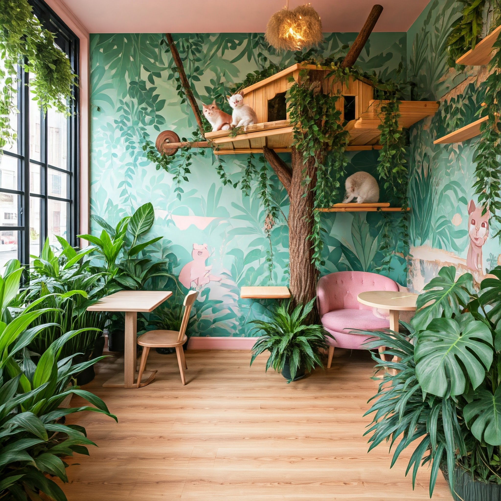

Café/Restaurante
Miau Café
Bem-vindo ao Paraíso dos Gatos e Café! ☕
Descubra um lugar onde carinho, café e ronronar se encontram. No nosso Cat Café, você pode desfrutar de deliciosas bebidas artesanais enquanto relaxa na companhia de gatos adoráveis e prontos para receber muito amor. Venha conhecer nosso espaço acolhedor e viver momentos únicos. Aqui, cada xícara é uma experiência e cada ronronar, um convite para voltar.
Venha nos visitar e sinta a magia!
